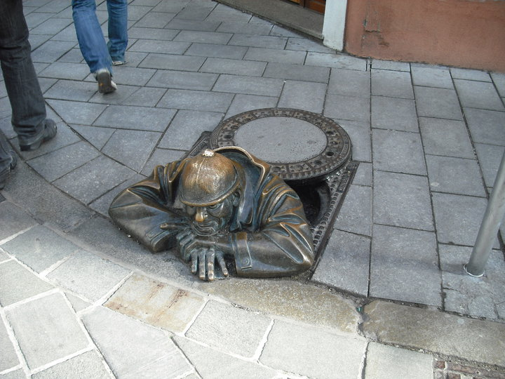

🇸🇰 Slovakia • 2010 • Day Trip from Vienna
Bratislava — the easiest and cheapest capital city escape from Vienna
Back in 2010, day trips from Vienna to Bratislava were unbelievably popular. You could hop on a cheap coach in Austria and suddenly find yourself in a completely different country and culture barely an hour later. For us, Bratislava felt like stepping into a quieter, rough-around-the-edges version of Vienna — full of cobbled streets, quirky statues, Communist-era contrasts and giant cheap beers.
What Bratislava felt like in 2010
In 2010 Bratislava still had a strong "between East and West" atmosphere. Vienna felt polished, elegant and wealthy — while Bratislava still carried visible reminders of its Communist past.
We remember old trams rattling through the streets, Soviet-style apartment blocks outside the centre, and prices that felt unbelievably cheap compared to Austria. At the time loads of Irish and British tourists described Bratislava as “Vienna's rough-around-the-edges cousin” — and honestly, that was part of its charm.
The compact Old Town was incredibly easy to explore in a few hours. We spent most of the day simply wandering around cobbled streets, popping into cafés and taking photos.
What we saw in Bratislava
🏰 Bratislava Castle
The huge white castle overlooking the city is the image most people remember from Bratislava. We walked uphill to it for panoramic views over the Danube, Austria and even Hungary on a clear day.
🚪 Michael's Gate
The famous medieval tower and one of the best-known landmarks in the city. It felt like walking through a gateway into old Eastern Europe.
⛪ St. Martin's Cathedral
One of the city's most historic buildings and once the coronation church of Hungarian kings.
📸 The quirky statues
Everyone photographed Čumil peeking out of the sewer and Schöne Náci tipping his hat. Back then these statues were absolutely iconic Bratislava tourist photos.
💙 The Blue Church
One of the most photogenic churches we've ever seen — pastel blue from top to bottom and completely different to anything else in Europe.
🛸 The UFO Bridge
The Most SNP bridge crossing the Danube with its UFO-style observation tower felt very futuristic compared to the old medieval streets.
Food, beer and café culture
One of the biggest memories from Bratislava was just how cheap everything felt compared to Vienna. We sat around cafés in the Old Town with massive beers, hearty Slovak food and people-watched for hours.
Around that time, typical Slovak dishes tourists tried included:
- 🥣 Garlic soup served in bread bowls
- 🥔 Potato dishes
- 🍖 Schnitzel
- 🥟 Dumplings
- 🍲 Goulash
- 🍺 Huge inexpensive beers
Why Bratislava day trips were so popular
Honestly, most people who did Bratislava day trips from Vienna around 2010 remember the same things:
- how tiny and walkable the centre was
- how easy it was to explore in a few hours
- how cheap everything felt compared to Vienna
- the panoramic castle views
- the quirky statues
- and the novelty of casually visiting another capital city by bus for the day
It genuinely felt adventurous at the time — especially before cheap flights and constant city breaks became as common as they are now.
Bratislava — our photos




Things to do in Bratislava
Looking for hotels in Bratislava?
Browse Bratislava hotels on Klook →What we'd pack for Bratislava
🔋 Portable power bank
Essential for photos, maps and keeping your phone alive all day.
View on Amazon →👟 Comfortable walking shoes
The Old Town is all cobbled streets and hills up towards the castle.
View on Amazon →📱 Phone lanyard
Ideal for quick photos around the city without constantly searching your pockets.
View on Amazon →Bratislava FAQ
Is Bratislava worth a day trip from Vienna?
Absolutely. Bratislava is one of the easiest and most interesting day trips from Vienna. It only takes around an hour by bus and feels completely different culturally.
How long do you need in Bratislava?
The compact Old Town can comfortably be explored in one day. Most people arrive in the morning and leave in the evening.
What is Bratislava famous for?
Bratislava is famous for Bratislava Castle, its quirky street statues, Communist-era contrasts, cheap beer and its location on the Danube.
Was Bratislava cheap in 2010?
Compared to Vienna — absolutely yes. Food, drinks and transport all felt significantly cheaper back then.